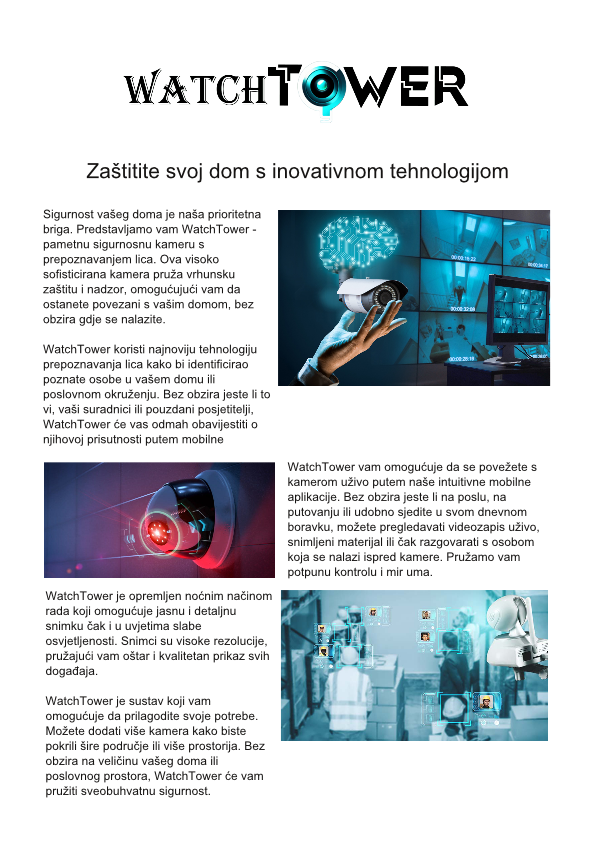

Scrimbus
Ulazkom u Scribus odabiremo velicinu papira za rad te odabiremo A4 koji je postavljen zadano. Prvo što radimo je dodavanje logo slike na vrh stranice sa komandom na vrhu “Insert Image Frame” te na taj Frame povlaćimo sliku. Desnim klikom na nju odabiremo “Adjust Image to Frame” kako bi iskoristili cijelu sliku te sprijecili prelijevanje iste. To ćemo ućiniti za sve slike koje su postavljene nasumićno zbog preglednosti sadržaja te da bi sprijećili predvidljivost i zamornost čitaocu. Text dodajemo nasumićno nasuprot slika kako bi iskoristili prostor. Prilikom izbacivanja datoteke idemo na File-> Export -> Save as Image
Rezultat:
